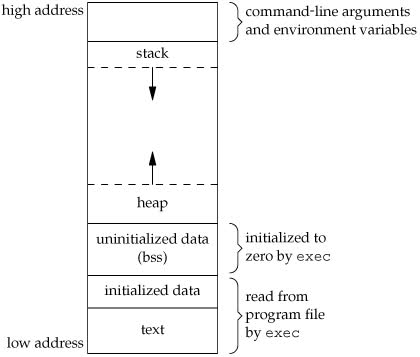

自学编译原理
这里是我学习编译原理的笔记,使用的材料是 Modern Compiler Implementation in C,俗称"虎书".
其实一直都在我的学习计划之中,但是由于自身原因一直拖到现在,其实书的选择也纠结了好久.
选择虎书是因为比起龙书(Compilers: Principles, Techniques and Tools,编译原理)相对较薄,比起编译原理与实践(Compiler Construction: Principles and Practice)的内容更加多,其实个人更推荐使用编译原理与实践来进行自学的.
其实个人之前学了一点直译器的实现,"半途而废"了,因为前端方面的 eopl 不是讲得很详细,后端讲的倒还行,所以直译器剩下的部分就等学完编译或者边学边回顾.
关于虎书以及读前准备
根据实现所使用语言来分,虎书有三个不同版本: C, Java & ML.本人所使用的就是 C 版本的, C 语言在读书的时候学了,但是从没有在别的地方用过,
所以读这本书之前我要先复习一下 C 语言的一些内容: https://www.studytonight.com/c/, 这个网站上的讲解都很不错,特别是指针那块,个人评价 5/5.
然后虎书是有配套源代码的,可以在官方网站: https://www.cs.princeton.edu/~appel/modern/c/ 找到,除了源代码还有书中提到的工具,读者跟着书上走一遍问题应该不大.
还有就是书的代码使用了 make, Makefile 的使用可以在 https://www.gnu.org/software/make/manual/make.html 找到,只要知道基本用法就可以了.
编译器用的就是 gcc 关于 Gcc 的使用教程网上很多,只要掌握基础的编译使用就好,还有就是预处理不属于 C,是属于编译器的,这块的内容可以看这里: https://gcc.gnu.org/onlinedocs/cpp/Macros.html.
还有最好学习一下 GDB 的使用,可以方便之后的调试: http://heather.cs.ucdavis.edu/~matloff/UnixAndC/CLanguage/Debug.html.
万事准备好就可以开始阅读虎书了.要注意的是,没有必要把上面的东西都"精通",不懂的时候再查阅,毕竟上面的东西不是虎书的重点.因此,你只需要花一到两天的时间来大概读一下上面的东西就可以了.
番外1:C程序的内存布局
主要参考资料 APUE 3rd 的第7章的第6小节,以及部分参考 C专家编程.
学会用 C 的指针,最重要的是清楚 C 程序的内存布局,也叫做程序的内存映像(program's image),一个 C 程序,比如, a.out 可执行文件的内存映像由6个部分组成,如果所示(等一下补),

这是一张典型的内存排列图,从高位到低位依次看,
- 储存了命令行参数以及环境变量的区域/段;
Stack,在函数执行的时候,函数里所定义的变量(一般就是局部变量)以及相应的信息都会被储存到这里,当函数返回后这些变量以及信息就丢弃了.
并且每次调用函数时,该区域都会保存返回的地址以及调用者(caller)的环境信息.所以每次调用一个函数的时候都会在这个区域为函数的自动以及临时变量分配空间.
所以递归函数里面,每次调用一次就会使用一个栈帧,不同栈帧上的同名变量是不一样的.这个区域和叫做
stack的数据结构一样有着同样的特性,而栈底位于高位,内存从栈底开始增长.这个区域由编译器自动管理,与
stack数据结构一样,栈帧是连续的,也就是说,Stack上的内存分配是连续的.(在某个函数的定义中,)在变量
A之后定义的变量B必定是内存地址相邻的.Heap,这个区域不像
Stack一样有着同名数据结构的特性,动态内存分配就是发生在这个区域的,所谓动态分配就是分配的内存大小不定,甚至会在分配后发生改变,所以这个区域上的内存分配不能够是连续的.比如
char *s = malloc(s),这个区域上面数据不会像Stack那样自动释放,所以不在使用
s的时候一定要手动释放:free(s). Heap顶是位于高位的,与Stack相反,由于Heap底位于低位,所以Heap的内存是从低位往高位增长.(
Stack也可以像Heap那样动态分配并且同时拥有Stack的自动管理特点,alloca.h提供一个alloca的函数完成这样的事情).未初始数据 (Uninitialized Data Segment),又叫做 (bss, block started by symbol)区域/段,
包含了在函数外声明却未初始的变量,也就是未初始化的全局变量;比如在函数外声明
long sum[1000];,sum就是属于这个区域,内核(kernel)会在程序执行前给这些数据给一个初始值, 0 或者
null pointer.已初始数据 (Initialized Data Segment)区域/段,包含了在函数外声明而且初始化了的变量,也就是已被初始化的变量;
比如在函数外声明
int maxcount = 99;maxcount就是属于该区域;Text 区域/段,包含了
CPU能够执行的机器指令(machine instructions),也就是编译后的函数,这块区域是可以共享的(sharable),所以这块才需要被加载进内存来方便频繁执行.并且这块区域基本上是只读的,防止执行过程中被意外地修改.
a.out 文件其实还有更多类型的区域存在,比如符号表(symbol table),调试信息(debugging information),动态共享库的连接表(linkage tables)等等,但是只有上面6个区域才会被加载到内存中,
所以这些额外区域不能算入内存映像中.
说到链接库(shared libraries),有两种,一种是静态的,还有一种动态的,动态的又叫共享库(shared libraries).在编译时,编译器会把静态库链接到可执行文件上,这样可执行文件就会偏大,发布的时候只需要发布可执行文件.
而共享库则是在运行时被加载,发布程序的时候,共享库需要和可执行文件一起配套发布,可执行文件大小相对于使用静态时候小,由于共享库不需要链接到可执行文件上,所以单独更新共享库只需要替换一下.
gcc -static source.c # 静态链接库 gcc source # 使用共享库(默认)